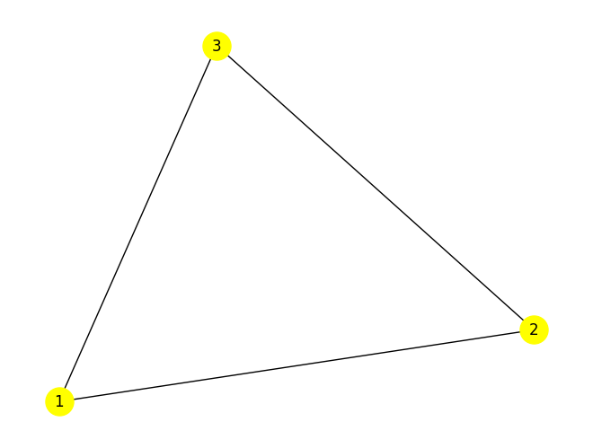

import networkx as nx
import matplotlib.pyplot as pltNetworkX
NetworkX is a network analysis library for Python.
“The package provides classes for graph objects, generators to create standard graphs, IO routines for reading in existing datasets, algorithms to analyze the resulting networks and some basic drawing tools.”
https://networkx.org/documentation/stable/reference/introduction.html
G = nx.Graph()G.add_nodes_from([1, 2, 3])
G.nodes()NodeView((1, 2, 3))G.add_edge(1, 2)
G.edges()EdgeView([(1, 2)])nx.draw(G)
plt.show()nx.draw(G, with_labels=True)
plt.show()nx.draw(G, with_labels=True, node_size=500, node_color='yellow')
plt.show()G.add_edges_from([(1,3),(2,3)])G.edgesEdgeView([(1, 2), (1, 3), (2, 3)])G.nodesNodeView((1, 2, 3))nx.draw(G, with_labels=True, node_size=500, node_color='yellow')
plt.show()
G = nx.Graph()
G.add_edges_from([(1,2),(1,3),(1,4),(1,5),(1,6)])
nx.draw(G, with_labels=True)
plt.show()nx.degree(G)DegreeView({1: 5, 2: 1, 3: 1, 4: 1, 5: 1, 6: 1})nx.degree_centrality(G){1: 1.0, 2: 0.2, 3: 0.2, 4: 0.2, 5: 0.2, 6: 0.2}nx.density(G)0.3333333333333333G = nx.Graph()
G.add_edges_from([(1,2),(1,3),(1,4),(1,5),(1,6),(2,3)])
nx.draw(G, with_labels=True)
plt.show()nx.degree(G)DegreeView({1: 5, 2: 2, 3: 2, 4: 1, 5: 1, 6: 1})nx.degree_centrality(G){1: 1.0, 2: 0.4, 3: 0.4, 4: 0.2, 5: 0.2, 6: 0.2}nx.density(G)0.4list(nx.connected_components(G))[{1, 2, 3, 4, 5, 6}]nx.number_connected_components(G)1G = nx.Graph()
G.add_edges_from([(1,2),(1,3),(1,4),(6,5)])
nx.draw(G, with_labels=True)
plt.show()
nx.degree_centrality(G){1: 0.6000000000000001, 2: 0.2, 3: 0.2, 4: 0.2, 6: 0.2, 5: 0.2}list(G.neighbors(1))[2, 3, 4]list(G.neighbors(3))[1]list(nx.connected_components(G))[{1, 2, 3, 4}, {5, 6}]nx.number_connected_components(G)2G = nx.Graph()
G.add_edges_from([(1,2),(1,3),(1,4),(1,5),(1,6),(2,3)])
nx.draw(G, with_labels=True)
plt.show()nx.shortest_path(G,3,6)[3, 1, 6]nx.shortest_path(G){1: {1: [1], 2: [1, 2], 3: [1, 3], 4: [1, 4], 5: [1, 5], 6: [1, 6]},
2: {2: [2], 1: [2, 1], 3: [2, 3], 4: [2, 1, 4], 5: [2, 1, 5], 6: [2, 1, 6]},
3: {3: [3], 1: [3, 1], 2: [3, 2], 4: [3, 1, 4], 5: [3, 1, 5], 6: [3, 1, 6]},
4: {4: [4],
1: [4, 1],
2: [4, 1, 2],
3: [4, 1, 3],
5: [4, 1, 5],
6: [4, 1, 6]},
5: {5: [5],
1: [5, 1],
2: [5, 1, 2],
3: [5, 1, 3],
4: [5, 1, 4],
6: [5, 1, 6]},
6: {6: [6],
1: [6, 1],
2: [6, 1, 2],
3: [6, 1, 3],
4: [6, 1, 4],
5: [6, 1, 5]}}nx.betweenness_centrality(G){1: 0.9, 2: 0.0, 3: 0.0, 4: 0.0, 5: 0.0, 6: 0.0}nx.edge_betweenness_centrality(G){(1, 2): 0.26666666666666666,
(1, 3): 0.26666666666666666,
(1, 4): 0.3333333333333333,
(1, 5): 0.3333333333333333,
(1, 6): 0.3333333333333333,
(2, 3): 0.06666666666666667}# load the graph
G = nx.karate_club_graph()
# visualize the graph
nx.draw(G, with_labels = True)G.nodesNodeView((0, 1, 2, 3, 4, 5, 6, 7, 8, 9, 10, 11, 12, 13, 14, 15, 16, 17, 18, 19, 20, 21, 22, 23, 24, 25, 26, 27, 28, 29, 30, 31, 32, 33))G.edgesEdgeView([(0, 1), (0, 2), (0, 3), (0, 4), (0, 5), (0, 6), (0, 7), (0, 8), (0, 10), (0, 11), (0, 12), (0, 13), (0, 17), (0, 19), (0, 21), (0, 31), (1, 2), (1, 3), (1, 7), (1, 13), (1, 17), (1, 19), (1, 21), (1, 30), (2, 3), (2, 7), (2, 8), (2, 9), (2, 13), (2, 27), (2, 28), (2, 32), (3, 7), (3, 12), (3, 13), (4, 6), (4, 10), (5, 6), (5, 10), (5, 16), (6, 16), (8, 30), (8, 32), (8, 33), (9, 33), (13, 33), (14, 32), (14, 33), (15, 32), (15, 33), (18, 32), (18, 33), (19, 33), (20, 32), (20, 33), (22, 32), (22, 33), (23, 25), (23, 27), (23, 29), (23, 32), (23, 33), (24, 25), (24, 27), (24, 31), (25, 31), (26, 29), (26, 33), (27, 33), (28, 31), (28, 33), (29, 32), (29, 33), (30, 32), (30, 33), (31, 32), (31, 33), (32, 33)])G.nodes(data=True)NodeDataView({0: {'club': 'Mr. Hi'}, 1: {'club': 'Mr. Hi'}, 2: {'club': 'Mr. Hi'}, 3: {'club': 'Mr. Hi'}, 4: {'club': 'Mr. Hi'}, 5: {'club': 'Mr. Hi'}, 6: {'club': 'Mr. Hi'}, 7: {'club': 'Mr. Hi'}, 8: {'club': 'Mr. Hi'}, 9: {'club': 'Officer'}, 10: {'club': 'Mr. Hi'}, 11: {'club': 'Mr. Hi'}, 12: {'club': 'Mr. Hi'}, 13: {'club': 'Mr. Hi'}, 14: {'club': 'Officer'}, 15: {'club': 'Officer'}, 16: {'club': 'Mr. Hi'}, 17: {'club': 'Mr. Hi'}, 18: {'club': 'Officer'}, 19: {'club': 'Mr. Hi'}, 20: {'club': 'Officer'}, 21: {'club': 'Mr. Hi'}, 22: {'club': 'Officer'}, 23: {'club': 'Officer'}, 24: {'club': 'Officer'}, 25: {'club': 'Officer'}, 26: {'club': 'Officer'}, 27: {'club': 'Officer'}, 28: {'club': 'Officer'}, 29: {'club': 'Officer'}, 30: {'club': 'Officer'}, 31: {'club': 'Officer'}, 32: {'club': 'Officer'}, 33: {'club': 'Officer'}})[i for i in G.nodes(data=True) if i[1]['club']=='Mr. Hi'][(0, {'club': 'Mr. Hi'}),
(1, {'club': 'Mr. Hi'}),
(2, {'club': 'Mr. Hi'}),
(3, {'club': 'Mr. Hi'}),
(4, {'club': 'Mr. Hi'}),
(5, {'club': 'Mr. Hi'}),
(6, {'club': 'Mr. Hi'}),
(7, {'club': 'Mr. Hi'}),
(8, {'club': 'Mr. Hi'}),
(10, {'club': 'Mr. Hi'}),
(11, {'club': 'Mr. Hi'}),
(12, {'club': 'Mr. Hi'}),
(13, {'club': 'Mr. Hi'}),
(16, {'club': 'Mr. Hi'}),
(17, {'club': 'Mr. Hi'}),
(19, {'club': 'Mr. Hi'}),
(21, {'club': 'Mr. Hi'})]# plot the communities
color_map = []
for node in G.nodes(data=True):
# print(node)
if node[1]['club'] == 'Mr. Hi':
color_map.append('blue')
else:
color_map.append('green')
nx.draw(G, node_color=color_map, with_labels=True)
plt.show()
from networkx.algorithms.community.centrality import girvan_newmancommunities = girvan_newman(G)
node_groups = []
for com in next(communities):
node_groups.append(list(com))
print(node_groups)
color_map = []
for node in G:
if node in node_groups[0]:
color_map.append('orange')
else:
color_map.append('yellow')
nx.draw(G, node_color=color_map, with_labels=True)
plt.show()[[0, 1, 3, 4, 5, 6, 7, 10, 11, 12, 13, 16, 17, 19, 21], [2, 8, 9, 14, 15, 18, 20, 22, 23, 24, 25, 26, 27, 28, 29, 30, 31, 32, 33]]nx.density(G)0.13903743315508021from networkx.algorithms.community import greedy_modularity_communitiescommunities = greedy_modularity_communities(G)
# Create empty dictionary
modularity_class = {}
#Loop through each community in the network
for community_number, community in enumerate(communities):
#For each member of the community, add their community number
for name in community:
modularity_class[name] = community_numbermodularity_class{8: 0,
14: 0,
15: 0,
18: 0,
20: 0,
22: 0,
23: 0,
24: 0,
25: 0,
26: 0,
27: 0,
28: 0,
29: 0,
30: 0,
31: 0,
32: 0,
33: 0,
1: 1,
2: 1,
3: 1,
7: 1,
9: 1,
12: 1,
13: 1,
17: 1,
21: 1,
0: 2,
16: 2,
19: 2,
4: 2,
5: 2,
6: 2,
10: 2,
11: 2}communities = greedy_modularity_communities(G)
node_groups = []
for com in communities:
node_groups.append(list(com))
print(node_groups)
color_map = []
for node in G:
if node in node_groups[0]:
color_map.append('blue')
elif node in node_groups[1]:
color_map.append('yellow')
else:
color_map.append('green')
nx.draw(G, node_color=color_map, with_labels=True)
plt.show()[[8, 14, 15, 18, 20, 22, 23, 24, 25, 26, 27, 28, 29, 30, 31, 32, 33], [1, 2, 3, 7, 9, 12, 13, 17, 21], [0, 16, 19, 4, 5, 6, 10, 11]]nx.degree_centrality(G){0: 0.48484848484848486,
1: 0.2727272727272727,
2: 0.30303030303030304,
3: 0.18181818181818182,
4: 0.09090909090909091,
5: 0.12121212121212122,
6: 0.12121212121212122,
7: 0.12121212121212122,
8: 0.15151515151515152,
9: 0.06060606060606061,
10: 0.09090909090909091,
11: 0.030303030303030304,
12: 0.06060606060606061,
13: 0.15151515151515152,
14: 0.06060606060606061,
15: 0.06060606060606061,
16: 0.06060606060606061,
17: 0.06060606060606061,
18: 0.06060606060606061,
19: 0.09090909090909091,
20: 0.06060606060606061,
21: 0.06060606060606061,
22: 0.06060606060606061,
23: 0.15151515151515152,
24: 0.09090909090909091,
25: 0.09090909090909091,
26: 0.06060606060606061,
27: 0.12121212121212122,
28: 0.09090909090909091,
29: 0.12121212121212122,
30: 0.12121212121212122,
31: 0.18181818181818182,
32: 0.36363636363636365,
33: 0.5151515151515151}dc = nx.degree_centrality(G)
for i in sorted(dc, key=dc.get, reverse=True):
print('{:2d}: {:.3f}'.format(i, dc[i]))33: 0.515
0: 0.485
32: 0.364
2: 0.303
1: 0.273
3: 0.182
31: 0.182
8: 0.152
13: 0.152
23: 0.152
5: 0.121
6: 0.121
7: 0.121
27: 0.121
29: 0.121
30: 0.121
4: 0.091
10: 0.091
19: 0.091
24: 0.091
25: 0.091
28: 0.091
9: 0.061
12: 0.061
14: 0.061
15: 0.061
16: 0.061
17: 0.061
18: 0.061
20: 0.061
21: 0.061
22: 0.061
26: 0.061
11: 0.030dc = nx.betweenness_centrality(G)
for i in sorted(dc, key=dc.get, reverse=True):
print('{:2d}: {:.3f}'.format(i, dc[i])) 0: 0.438
33: 0.304
32: 0.145
2: 0.144
31: 0.138
8: 0.056
1: 0.054
13: 0.046
19: 0.032
5: 0.030
6: 0.030
27: 0.022
23: 0.018
30: 0.014
3: 0.012
25: 0.004
29: 0.003
24: 0.002
28: 0.002
9: 0.001
4: 0.001
10: 0.001
7: 0.000
11: 0.000
12: 0.000
14: 0.000
15: 0.000
16: 0.000
17: 0.000
18: 0.000
20: 0.000
21: 0.000
22: 0.000
26: 0.000dc = nx.closeness_centrality(G)
for i in sorted(dc, key=dc.get, reverse=True):
print('{:2d}: {:.3f}'.format(i, dc[i])) 0: 0.569
2: 0.559
33: 0.550
31: 0.541
8: 0.516
13: 0.516
32: 0.516
19: 0.500
1: 0.485
3: 0.465
27: 0.458
30: 0.458
28: 0.452
7: 0.440
9: 0.434
23: 0.393
5: 0.384
6: 0.384
29: 0.384
4: 0.379
10: 0.379
17: 0.375
21: 0.375
24: 0.375
25: 0.375
12: 0.371
14: 0.371
15: 0.371
18: 0.371
20: 0.371
22: 0.371
11: 0.367
26: 0.363
16: 0.284dc = nx.eigenvector_centrality(G)
for i in sorted(dc, key=dc.get, reverse=True):
print('{:2d}: {:.3f}'.format(i, dc[i]))33: 0.373
0: 0.355
2: 0.317
32: 0.309
1: 0.266
8: 0.227
13: 0.226
3: 0.211
31: 0.191
30: 0.175
7: 0.171
23: 0.150
19: 0.148
29: 0.135
27: 0.133
28: 0.131
9: 0.103
14: 0.101
15: 0.101
18: 0.101
20: 0.101
22: 0.101
17: 0.092
21: 0.092
12: 0.084
5: 0.079
6: 0.079
4: 0.076
10: 0.076
26: 0.076
25: 0.059
24: 0.057
11: 0.053
16: 0.024